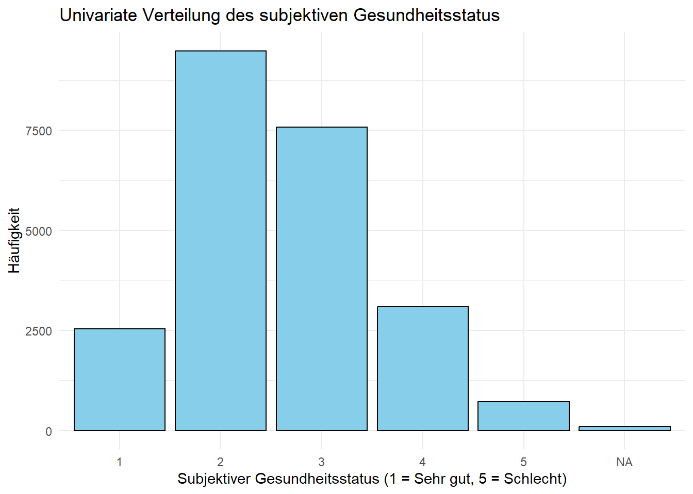
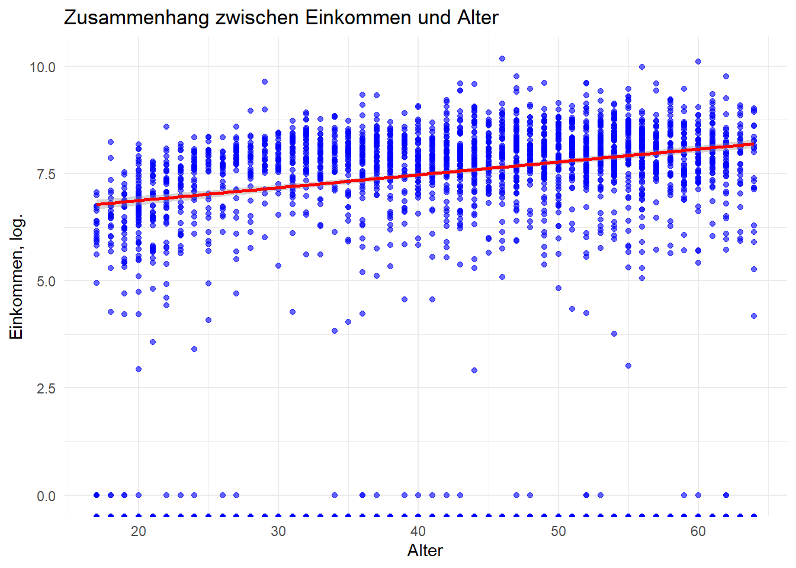

[1] 21. Übungsblatt
1 Einführung in Quarto und R
1.1 Quarto
Quarto ermöglicht es, Inhalte und ausführbaren Code zu einem fertigen Dokument zu verweben. Mehr über Quarto unter https://quarto.org.
1.2 Code ausführen
Wenn Du auf die Schaltfläche Render klickst, wird ein Dokument erstellt, das sowohl den Inhalt als auch die Ausgabe des eingebetteten Codes enthält. Code kann wie folgt einbettet werden:
Es können Optionen zu ausführbarem Code wie folgt hinzugefügt werden
[1] 4echo: false deaktiviert das Drucken des Codes (nur die Ausgabe wird angezeigt).
1.3 Arbeitsverzeichnis festsetzen
1.4 Packages installieren und laden
1.5 Daten einlesen
Wir arbeiten mit dem Übungsdatensatz des SOEP (DOI:10.5684/soep.practice.v36). Es werden zwei Datensätze eingelesen. Der erste Datensatz enthalt die tatsächlichen Umfragedaten, der zweite Datensatz enthält die Variablenlabels.
1.6 Datenexploration
There are 23522 observations in our data.
1.7 Datenexploration
Schauen wir uns die ersten Zeilen des Datensatzes an, um einen ersten Überblick über den Datensatz zu gewinnen.
2 Übungsaufgaben
2.1 Übung
Wie viele Beobachtungen im Datensatz sind Frauen?
2.2 Übung
Erstelle ein Balkendiagramm, das die Verteilung des Alters darstellt.
2.3 Übung
Wir alt ist die jüngste und wie alt die älteste Person?
2.4 Übung
Welcher Variablentyp ist Geschlecht (sex)? Welcher Alter? Welcher Bildung?
Rows: 23,522
Columns: 15
$ id <int> 194, 194, 194, 194, 194, 19052, 27495, 27495, 27495, 22539…
$ syear <int> 2015, 2016, 2017, 2018, 2019, 2015, 2016, 2018, 2019, 2015…
$ sex <chr> "[1] weiblich", "[1] weiblich", "[1] weiblich", "[1] weibl…
$ alter <int> 59, 60, 61, 62, 63, 74, 35, 37, 38, 85, 73, 74, 43, 44, 45…
$ anz_pers <int> 2, 2, 2, 2, 2, 2, 3, 3, 3, 2, 1, 1, 4, 4, 4, 4, 4, 2, 2, 2…
$ anz_kind <int> 0, 0, 0, 0, 0, 0, 1, 1, 1, 0, 0, 0, 2, 2, 2, 2, 2, 0, 0, 0…
$ bildung <dbl> 10.5, 10.5, 10.5, 10.5, 10.5, 10.0, 15.0, 15.0, 15.0, 18.0…
$ erwerb <chr> "[2] Teilzeitbeschäftigung", "[2] Teilzeitbeschäftigung", …
$ branche <chr> "[84] Oeffentliche Verwaltung, Verteidigung; Sozialversich…
$ gesund_org <chr> "[4] Weniger gut", "[3] Zufriedenstellend", "[3] Zufrieden…
$ lebensz_org <chr> "6", "5", "7", "5", "6", "8", "8", "8", "8", "8", "5", "8"…
$ einkommenj1 <dbl> 28678.94, 19962.29, 22227.68, 22100.38, 23157.92, 0.00, 14…
$ einkommenj2 <dbl> 0.000, 0.000, 0.000, 0.000, 0.000, 0.000, 0.000, 0.000, 0.…
$ einkommenm1 <dbl> 1659.1285, 1809.3364, 1849.0375, 1616.5137, 1901.0012, 0.0…
$ einkommenm2 <dbl> 0, 0, 0, 0, 0, 0, 0, 0, 0, 0, 0, 0, 0, 0, 0, 0, 0, 0, 0, 0…2.5 Übung
Wie viele Beobachtungen gibt es pro Jahr?
2.6 Übung
Was beinhaltet die Variable “einkommenj1” und “einkommenj2”?
2.7 Übung
Erstelle einen Vektor, der die Ausprägungen der Variable “gesund_org” enthält. Und schaue Dir diesen Vektor an.
2.8 Übung
Wir möchten den subjektiven Gesundheitsstatus als numerische Variable nutzen. Wir müssen daher die Variable gesund_org in eine numerische Variable umwandeln. Achte auf fehlende Werte.
[1] Sehr gut [2] Gut
102 2535 9488
[3] Zufriedenstellend [4] Weniger gut [5] Schlecht
7576 3089 732
<NA>
0 Code
# Ersetze leere Zeichenketten "" durch NA in der Spalte 'gesund_org'
df$gesund_org[df$gesund_org == ""] <- NA
# Extrahiere die numerischen Werte aus der Spalte 'gesund_org'
df$gesund_org_numeric <- as.numeric(sub("\\[([0-9]+)\\].*", "\\1", df$gesund_org))
# Überprüfe die Änderungen
table(df$gesund_org_numeric, useNA = "always")
1 2 3 4 5 <NA>
2535 9488 7576 3089 732 102
[1] Sehr gut [2] Gut [3] Zufriedenstellend
2535 9488 7576
[4] Weniger gut [5] Schlecht <NA>
3089 732 102 2.9 Übung
Stelle die Verteilung des subjetiven Gesundheitsstatus graphisch dar
Code

2.10 Übung
Gibt es fehlende Werte auf der Variable monatliches Einkommen (einkommenm1) und auf der Variable Alter?
17 18 19 20 21 22 23 24 25 26 27 28 29 30 31 32
472 470 437 392 347 290 281 263 244 254 283 282 293 304 337 341
33 34 35 36 37 38 39 40 41 42 43 44 45 46 47 48
331 368 387 387 379 397 413 430 447 450 454 434 450 466 466 473
49 50 51 52 53 54 55 56 57 58 59 60 61 62 63 64
500 517 526 518 479 447 412 381 381 359 339 336 326 296 298 312
65 66 67 68 69 70 71 72 73 74 75 76 77 78 79 80
325 314 309 294 272 239 242 244 246 256 276 271 270 247 223 192
81 82 83 84 85 86 87 88 89 90 91 92 93 94 95 96
156 124 105 82 74 64 47 46 36 28 19 18 13 11 8 5
97 98 99 100 101 102 <NA>
5 4 3 3 1 1 0 Min. 1st Qu. Median Mean 3rd Qu. Max.
0.0 0.0 852.9 1645.6 2687.4 35260.9 2.11 Übung
Schaue Dir den Zusammenhang von subjektiven Gesundheitsstatus und Alter graphisch mit Hilfe eines Scatterplots an. Beschränke die Daten auf das Jahr 2019 und auf Personen, die jünger als 65 Jahre alt sind.
Code
# Scatterplot mit ggplot2 erstellen
ggplot(df %>% filter(syear=="2019", alter < 65), aes(x = alter , y = einkommenm1)) +
geom_point(color = "blue", alpha = 0.6) + # Punkte hinzufügen
geom_smooth(method = "lm", color = "red", se = TRUE) + # Lineare Trendlinie mit Konfidenzintervall
labs(
title = "Zusammenhang zwischen Einkommen und Alter",
x = "Alter",
y = "Einkommen"
) +
theme_minimal() # Minimalistisches Theme`geom_smooth()` using formula = 'y ~ x'
2.12 Übung
Und nun mit logarithmiertem Einkommen. Was fällt auf?
Code
# Scatterplot mit ggplot2 erstellen
ggplot(df %>% filter(syear=="2019", alter < 65), aes(x = alter , y = log(einkommenm1))) +
geom_point(color = "blue", alpha = 0.6) + # Punkte hinzufügen
geom_smooth(method = "lm", color = "red", se = TRUE) + # Lineare Trendlinie mit Konfidenzintervall
labs(
title = "Zusammenhang zwischen Einkommen und Alter",
x = "Alter",
y = "Einkommen, log."
) +
theme_minimal() # Minimalistisches Theme`geom_smooth()` using formula = 'y ~ x'Warning: Removed 660 rows containing non-finite outside the scale range
(`stat_smooth()`).
2.13 Übung
Wandle dieses Dokument in ein PDF und ein HTML Dokument um.
3 Weiterführende Literatur
1. Übungsblatt – Fortgeschrittene quantitative Methoden 1. Übungsblatt – Fortgeschrittene quantitative Methoden 1. Übungsblatt – Fortgeschrittene quantitative Methoden Fortgeschrittene quantitative Methoden